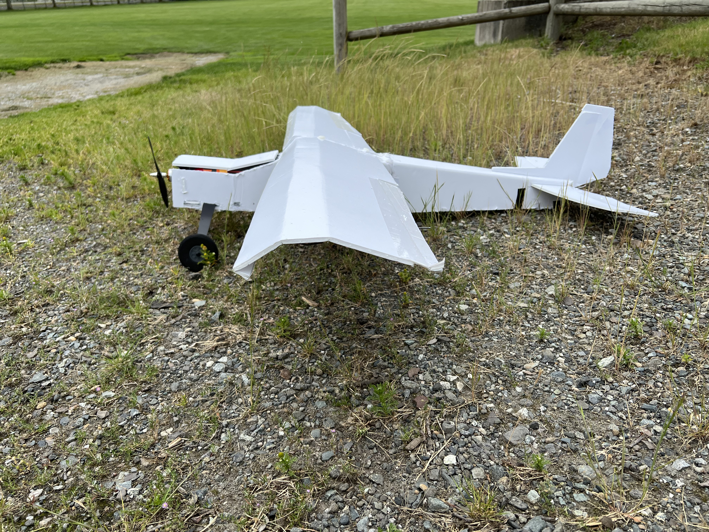
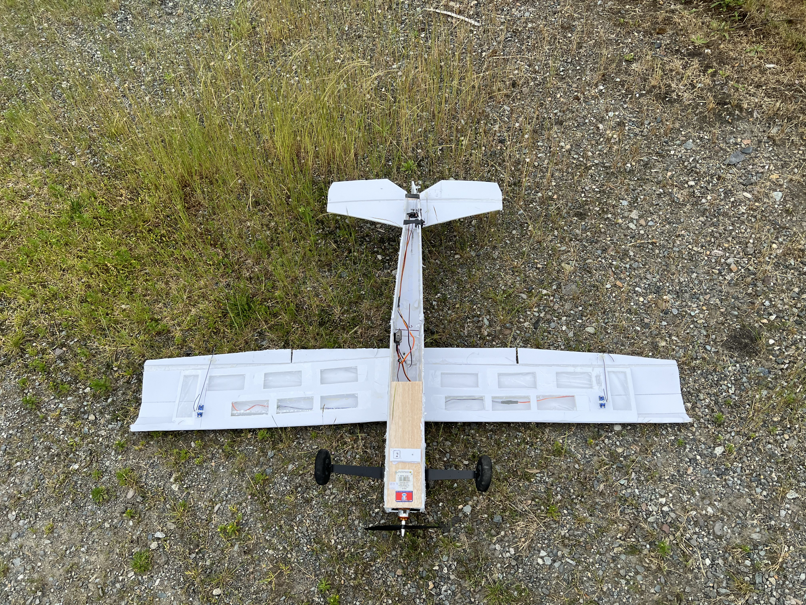
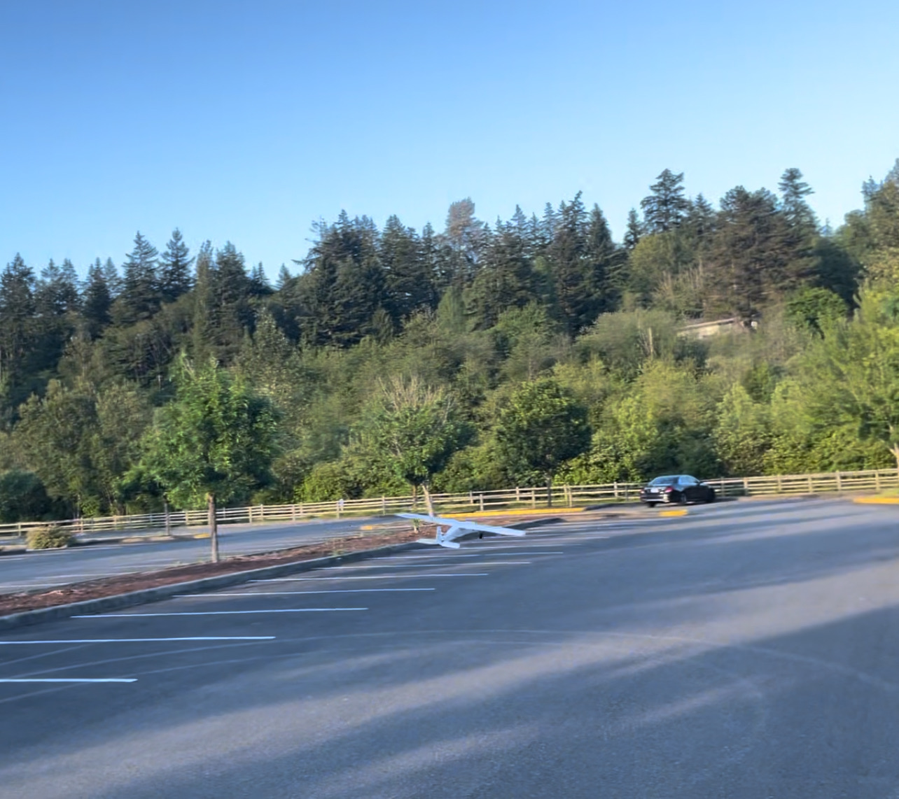

Demonstrating Aircraft Dynamics with a Low‑Cost UAV
Built a foamboard R/C aircraft from hobby‑grade parts and everyday materials, engineered to be a hands‑on testbed for and educational experiments.

Aircraft Overview & Specifications
Built both as a proof-of-concept and a useful classroom demonstration for AP Physics 1 students.
Demonstrator MK.1
| Motor | ~2250 kV |
| Wingspan | ≈ 1.66 m |
Airframe & Materials
Scored foamboard, balsa and hot‑glue assembly; planform derived from JoyPlanes. Cheap and lightweight structure enables rapid iteration and low‑risk field testing.
Controls & Actuation
Four‑servo setup providing elevator (pitch), rudder (yaw), and dual ailerons (roll). Used Spektrum motor, ESC, reciever, and DX6E transmitter.
Build Timeline
Build on my initial proficiency with R/C piloting and gain by practicing with an Aeroscout 2.1 on the DX6E.
Foamboard fuselage and wing built from forum schematics. Correct initial errors in schematic and lengthen design wingspan by 0.2m.
Powerplant and control electronics installed; four‑servo control chosen to fully articulate pitch, yaw, and roll (×2 ailerons).
Unstable first attempts revealed design instability: insufficent lift generated from slightly asymetrical wings due to errors in the manufacturing process.
Airframe lightened; improvements noted but not sufficient for stable cruise.
Upgraded motor and refined wing geometry. Center‑of‑gravity adjusted for better longitudinal stability.
Third round of flight tests achieved reliable, controllable flight and achieved project goal.
Educational Experiments & Demonstrations
Core Concepts
Designed to make foundational ideas tangible for students in physics and introductory aerospace:
- Lift & Pressure — connect Bernoulli’s principle and pressure differentials to observed wing performance.
- Stability & Control — demonstrate pitch, yaw, and roll coupling as well as the concept of CG.
- Power & Weight — show thrust‑to‑weight tradeoffs and effect of mass on takeoff distance and climb rate.
Sample Activities
- Angle‑of‑Attack Sweep: Observe stall onset and lift curve trends with incremental elevator inputs.
- CG Shift Demo: Add/remove small masses to illustrate effects on longitudinal stability and trim.
- Control Reversal Test: Measure roll rate vs. aileron deflection; discuss yaw‑roll coupling.
All activities are designed for outdoor demos with safety buffers and spotters.
Curriculum Integration
AP Physics 1 Add‑On
Use the UAV as a recurring lab demo: free‑body diagrams in flight, forces in coordinated turns, and real‑world measurement of velocity and acceleration with onboard or ground‑based video analysis.
Topics reinforced: forces, energy, motion, pressure, Bernoulli, and experimental design.
Build & Flight Gallery



Acknowledgments
Special thanks to mentors and supporters who guided the build, flight testing, and curriculum design.
- Mr. Rogers from the Bear Creek School
- Janice Crew from the Museum of Flight in Seattle, WA
- Kaleb Shaw from UW DBF